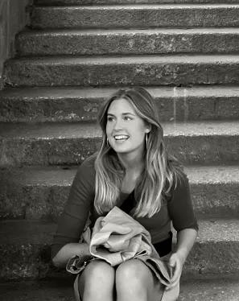

VELKOMMEN til mit PORTFOLIO
SILLE BIRK
HEJ!
Som studerende på Multimediedesign-uddannelsen på Københavns Erhvervsakademi har jeg i mit første semester arbejdet med en række inspirerende temaer, der har udviklet mine evner inden for design, kodning og digital produktion.
Gennem temaerne har jeg skabt websites og et animeret spil, som du kan udforske her på siden. Hvert projekt er præsenteret med en beskrivelse af processen, fra idé til færdigt resultat.
Jeg håber, du vil finde inspiration i mine projekter. God fornøjelse!